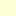

<!doctype html>
<html lang="en">
    <head>
        <meta charset="utf-8">
        <meta http-equiv="X-UA-Compatible" content="IE=edge">
        <meta name="viewport" content="initial-scale=1,user-scalable=no,maximum-scale=1,width=device-width">
        <meta name="mobile-web-app-capable" content="yes">
        <meta name="apple-mobile-web-app-capable" content="yes">
        <link rel="stylesheet" href="css/leaflet.css"><link rel="stylesheet" href="http://maxcdn.bootstrapcdn.com/font-awesome/4.6.1/css/font-awesome.min.css"><link rel="stylesheet" href="css/L.Control.Locate.min.css">
        <link rel="stylesheet" href="css/qgis2web.css">
        <link rel="stylesheet" href="css/Control.OSMGeocoder.css">
        <link rel="stylesheet" href="css/leaflet-measure.css">
        <style>
        html, body, #map {
            width: 100%;
            height: 100%;
            padding: 0;
            margin: 0;
        }
        </style>
        <title>Strolling in Athens</title>
    </head>
    <body>
        <div id="map">
        </div>
        <script src="js/qgis2web_expressions.js"></script>
        <script src="js/leaflet.js"></script><script src="js/L.Control.Locate.min.js"></script>
        <script src="js/leaflet.rotatedMarker.js"></script>
        <script src="js/leaflet.pattern.js"></script>
        <script src="js/leaflet-hash.js"></script>
        <script src="js/Autolinker.min.js"></script>
        <script src="js/rbush.min.js"></script>
        <script src="js/labelgun.min.js"></script>
        <script src="js/labels.js"></script>
        <script src="js/Control.OSMGeocoder.js"></script>
        <script src="js/leaflet-measure.js"></script>
        <script src="data/StrollingTime_0.js"></script>
        <script src="data/Sidewalks_1.js"></script>
        <script src="data/CommercialTriangle_2.js"></script>
        <script src="data/MetroStation_3.js"></script>
        <script>
        var map = L.map('map', {
            zoomControl:true, maxZoom:25, minZoom:1
        }).fitBounds([[37.9747413024,23.7207625027],[37.984487034,23.7416830305]]);
        var hash = new L.Hash(map);
        map.attributionControl.addAttribution('<a href="https://github.com/tomchadwin/qgis2web" target="_blank">qgis2web</a>');
        L.control.locate().addTo(map);
        var measureControl = new L.Control.Measure({
            primaryLengthUnit: 'feet',
            secondaryLengthUnit: 'miles',
            primaryAreaUnit: 'sqfeet',
            secondaryAreaUnit: 'sqmiles'
        });
        measureControl.addTo(map);
        var bounds_group = new L.featureGroup([]);
        var basemap0 = L.tileLayer('http://{s}.tile.openstreetmap.de/tiles/osmde/{z}/{x}/{y}.png', {
            attribution: '&copy; <a href="http://openstreetmap.org">OpenStreetMap</a> contributors,<a href="http://creativecommons.org/licenses/by-sa/2.0/">CC-BY-SA</a>',
            maxZoom: 25
        });
        basemap0.addTo(map);
        function setBounds() {
        }
        function pop_StrollingTime_0(feature, layer) {
            var popupContent = '<table>\
                    <tr>\
                        <th scope="row">Name</th>\
                        <td>' + (feature.properties['Name'] !== null ? Autolinker.link(String(feature.properties['Name'])) : '') + '</td>\
                    </tr>\
                    <tr>\
                        <td colspan="2"><strong>TimeStam_1</strong><br />' + (feature.properties['TimeStam_1'] !== null ? Autolinker.link(String(feature.properties['TimeStam_1'])) : '') + '</td>\
                    </tr>\
                </table>';
            layer.bindPopup(popupContent, {maxHeight: 400});
        }

        function style_StrollingTime_0_0(feature) {
            if (feature.properties['TimeStam_1'] >= 0.000000 && feature.properties['TimeStam_1'] <= 2.100000 ) {
                return {
                pane: 'pane_StrollingTime_0',
                opacity: 1,
                color: 'rgba(0,0,0,0.0)',
                dashArray: '',
                lineCap: 'butt',
                lineJoin: 'miter',
                weight: 1.0, 
                fill: true,
                fillOpacity: 1,
                fillColor: 'rgba(153,52,4,1.0)',
            }
            }
            if (feature.properties['TimeStam_1'] >= 2.100000 && feature.properties['TimeStam_1'] <= 4.100000 ) {
                return {
                pane: 'pane_StrollingTime_0',
                opacity: 1,
                color: 'rgba(0,0,0,0.0)',
                dashArray: '',
                lineCap: 'butt',
                lineJoin: 'miter',
                weight: 1.0, 
                fill: true,
                fillOpacity: 1,
                fillColor: 'rgba(217,95,14,1.0)',
            }
            }
            if (feature.properties['TimeStam_1'] >= 4.100000 && feature.properties['TimeStam_1'] <= 6.100000 ) {
                return {
                pane: 'pane_StrollingTime_0',
                opacity: 1,
                color: 'rgba(0,0,0,0.0)',
                dashArray: '',
                lineCap: 'butt',
                lineJoin: 'miter',
                weight: 1.0, 
                fill: true,
                fillOpacity: 1,
                fillColor: 'rgba(254,153,41,1.0)',
            }
            }
            if (feature.properties['TimeStam_1'] >= 6.100000 && feature.properties['TimeStam_1'] <= 8.100000 ) {
                return {
                pane: 'pane_StrollingTime_0',
                opacity: 1,
                color: 'rgba(0,0,0,0.0)',
                dashArray: '',
                lineCap: 'butt',
                lineJoin: 'miter',
                weight: 1.0, 
                fill: true,
                fillOpacity: 1,
                fillColor: 'rgba(254,217,142,1.0)',
            }
            }
            if (feature.properties['TimeStam_1'] >= 8.100000 && feature.properties['TimeStam_1'] <= 10.000000 ) {
                return {
                pane: 'pane_StrollingTime_0',
                opacity: 1,
                color: 'rgba(0,0,0,0.0)',
                dashArray: '',
                lineCap: 'butt',
                lineJoin: 'miter',
                weight: 1.0, 
                fill: true,
                fillOpacity: 1,
                fillColor: 'rgba(255,255,212,1.0)',
            }
            }
        }
        map.createPane('pane_StrollingTime_0');
        map.getPane('pane_StrollingTime_0').style.zIndex = 400;
        map.getPane('pane_StrollingTime_0').style['mix-blend-mode'] = 'normal';
        var layer_StrollingTime_0 = new L.geoJson(json_StrollingTime_0, {
            attribution: '<a href=""></a>',
            pane: 'pane_StrollingTime_0',
            onEachFeature: pop_StrollingTime_0,
            style: style_StrollingTime_0_0,
        });
        bounds_group.addLayer(layer_StrollingTime_0);
        map.addLayer(layer_StrollingTime_0);
        function pop_Sidewalks_1(feature, layer) {
            var popupContent = '<table>\
                    <tr>\
                        <td colspan="2">' + (feature.properties['Name'] !== null ? Autolinker.link(String(feature.properties['Name'])) : '') + '</td>\
                    </tr>\
                    <tr>\
                        <td colspan="2">' + (feature.properties['descriptio'] !== null ? Autolinker.link(String(feature.properties['descriptio'])) : '') + '</td>\
                    </tr>\
                    <tr>\
                        <td colspan="2">' + (feature.properties['timestamp'] !== null ? Autolinker.link(String(feature.properties['timestamp'])) : '') + '</td>\
                    </tr>\
                    <tr>\
                        <td colspan="2">' + (feature.properties['begin'] !== null ? Autolinker.link(String(feature.properties['begin'])) : '') + '</td>\
                    </tr>\
                    <tr>\
                        <td colspan="2">' + (feature.properties['end'] !== null ? Autolinker.link(String(feature.properties['end'])) : '') + '</td>\
                    </tr>\
                    <tr>\
                        <td colspan="2">' + (feature.properties['altitudeMo'] !== null ? Autolinker.link(String(feature.properties['altitudeMo'])) : '') + '</td>\
                    </tr>\
                    <tr>\
                        <td colspan="2">' + (feature.properties['tessellate'] !== null ? Autolinker.link(String(feature.properties['tessellate'])) : '') + '</td>\
                    </tr>\
                    <tr>\
                        <td colspan="2">' + (feature.properties['extrude'] !== null ? Autolinker.link(String(feature.properties['extrude'])) : '') + '</td>\
                    </tr>\
                    <tr>\
                        <td colspan="2">' + (feature.properties['visibility'] !== null ? Autolinker.link(String(feature.properties['visibility'])) : '') + '</td>\
                    </tr>\
                    <tr>\
                        <td colspan="2">' + (feature.properties['drawOrder'] !== null ? Autolinker.link(String(feature.properties['drawOrder'])) : '') + '</td>\
                    </tr>\
                    <tr>\
                        <td colspan="2">' + (feature.properties['icon'] !== null ? Autolinker.link(String(feature.properties['icon'])) : '') + '</td>\
                    </tr>\
                </table>';
            layer.bindPopup(popupContent, {maxHeight: 400});
        }

        function style_Sidewalks_1_0() {
            return {
                pane: 'pane_Sidewalks_1',
                opacity: 1,
                color: 'rgba(158,122,15,0.9)',
                dashArray: '',
                lineCap: 'square',
                lineJoin: 'bevel',
                weight: 1,
                fillOpacity: 0,
            }
        }
        map.createPane('pane_Sidewalks_1');
        map.getPane('pane_Sidewalks_1').style.zIndex = 401;
        map.getPane('pane_Sidewalks_1').style['mix-blend-mode'] = 'normal';
        var layer_Sidewalks_1 = new L.geoJson(json_Sidewalks_1, {
            attribution: '<a href=""></a>',
            pane: 'pane_Sidewalks_1',
            onEachFeature: pop_Sidewalks_1,
            style: style_Sidewalks_1_0,
        });
        bounds_group.addLayer(layer_Sidewalks_1);
        function pop_CommercialTriangle_2(feature, layer) {
            var popupContent = '<table>\
                    <tr>\
                        <td colspan="2">' + (feature.properties['id'] !== null ? Autolinker.link(String(feature.properties['id'])) : '') + '</td>\
                    </tr>\
                </table>';
            layer.bindPopup(popupContent, {maxHeight: 400});
        }

        function style_CommercialTriangle_2_0() {
            return {
                pane: 'pane_CommercialTriangle_2',
                opacity: 1,
                color: 'rgba(255,0,0,0.698039)',
                dashArray: '',
                lineCap: 'butt',
                lineJoin: 'miter',
                weight: 4.0, 
                fill: true,
                fillOpacity: 1,
                fillColor: 'rgba(136,17,21,0.698039)',
            }
        }
        map.createPane('pane_CommercialTriangle_2');
        map.getPane('pane_CommercialTriangle_2').style.zIndex = 402;
        map.getPane('pane_CommercialTriangle_2').style['mix-blend-mode'] = 'normal';
        var layer_CommercialTriangle_2 = new L.geoJson(json_CommercialTriangle_2, {
            attribution: '<a href=""></a>',
            pane: 'pane_CommercialTriangle_2',
            onEachFeature: pop_CommercialTriangle_2,
            style: style_CommercialTriangle_2_0,
        });
        bounds_group.addLayer(layer_CommercialTriangle_2);
        map.addLayer(layer_CommercialTriangle_2);
        function pop_MetroStation_3(feature, layer) {
            var popupContent = '<table>\
                    <tr>\
                        <td colspan="2">' + (feature.properties['id'] !== null ? Autolinker.link(String(feature.properties['id'])) : '') + '</td>\
                    </tr>\
                    <tr>\
                        <td colspan="2"><strong>Station</strong><br />' + (feature.properties['Station'] !== null ? Autolinker.link(String(feature.properties['Station'])) : '') + '</td>\
                    </tr>\
                </table>';
            layer.bindPopup(popupContent, {maxHeight: 400});
        }

        function style_MetroStation_3_0() {
            return {
                pane: 'pane_MetroStation_3',
        rotationAngle: 0.0,
        rotationOrigin: 'center center',
        icon: L.icon({
            iconUrl: 'markers/transport_bus_station.svg',
            iconSize: [22.8, 22.8]
        }),
            }
        }
        map.createPane('pane_MetroStation_3');
        map.getPane('pane_MetroStation_3').style.zIndex = 403;
        map.getPane('pane_MetroStation_3').style['mix-blend-mode'] = 'normal';
        var layer_MetroStation_3 = new L.geoJson(json_MetroStation_3, {
            attribution: '<a href=""></a>',
            pane: 'pane_MetroStation_3',
            onEachFeature: pop_MetroStation_3,
            pointToLayer: function (feature, latlng) {
                var context = {
                    feature: feature,
                    variables: {}
                };
                return L.marker(latlng, style_MetroStation_3_0(feature));
            },
        });
        bounds_group.addLayer(layer_MetroStation_3);
        map.addLayer(layer_MetroStation_3);
        var title = new L.Control();
        title.onAdd = function (map) {
            this._div = L.DomUtil.create('div', 'info');
            this.update();
            return this._div;
        };
        title.update = function () {
            this._div.innerHTML = '<h2>Strolling in Athens</h2>';
        };
        title.addTo(map);
        var osmGeocoder = new L.Control.OSMGeocoder({
            collapsed: false,
            position: 'topright',
            text: 'Search',
        });
        osmGeocoder.addTo(map);
        var baseMaps = {};
        L.control.layers(baseMaps,{' Metro Station': layer_MetroStation_3,' Commercial Triangle': layer_CommercialTriangle_2,' Sidewalks': layer_Sidewalks_1,'Strolling Time<br /><table><tr><td style="text-align: center;"></td><td>2 minutes</td></tr><tr><td style="text-align: center;"></td><td>4 minutes</td></tr><tr><td style="text-align: center;"></td><td>6 minutes</td></tr><tr><td style="text-align: center;"></td><td>8 minutes</td></tr><tr><td style="text-align: center;"></td><td>10 minutes</td></tr></table>': layer_StrollingTime_0,},{collapsed:false}).addTo(map);
        setBounds();
        var i = 0;
        layer_MetroStation_3.eachLayer(function(layer) {
            var context = {
                feature: layer.feature,
                variables: {}
            };
            layer.bindTooltip((layer.feature.properties['Station'] !== null?String('<div style="color: #000000; font-size: 10pt; font-weight: bold; font-family: \'MS Shell Dlg 2\', sans-serif;">' + layer.feature.properties['Station']) + '</div>':''), {permanent: true, offset: [-0, -16], className: 'css_MetroStation_3'});
            labels.push(layer);
            totalMarkers += 1;
              layer.added = true;
              addLabel(layer, i);
              i++;
        });
        resetLabels([layer_MetroStation_3]);
        map.on("zoomend", function(){
            resetLabels([layer_MetroStation_3]);
        });
        map.on("layeradd", function(){
            resetLabels([layer_MetroStation_3]);
        });
        map.on("layerremove", function(){
            resetLabels([layer_MetroStation_3]);
        });
        </script>
    </body>
</html>
